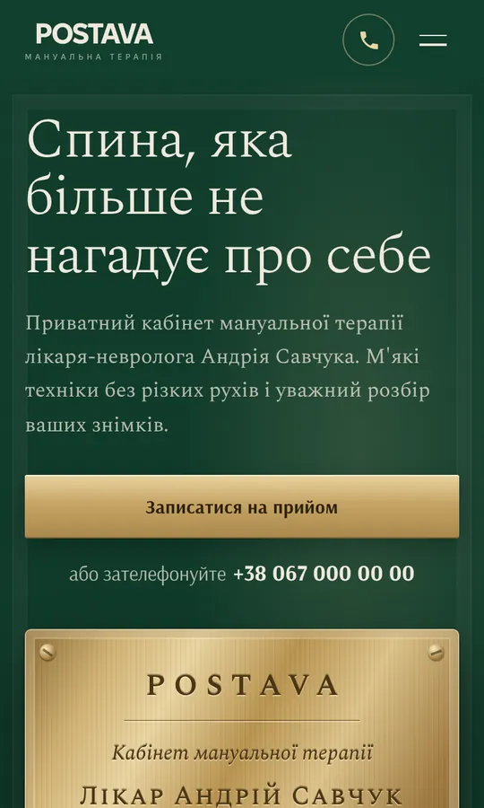
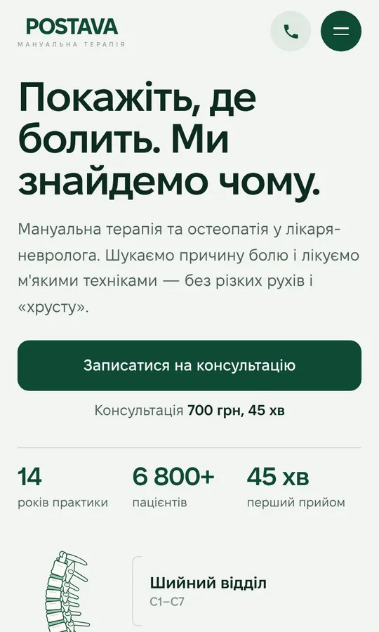
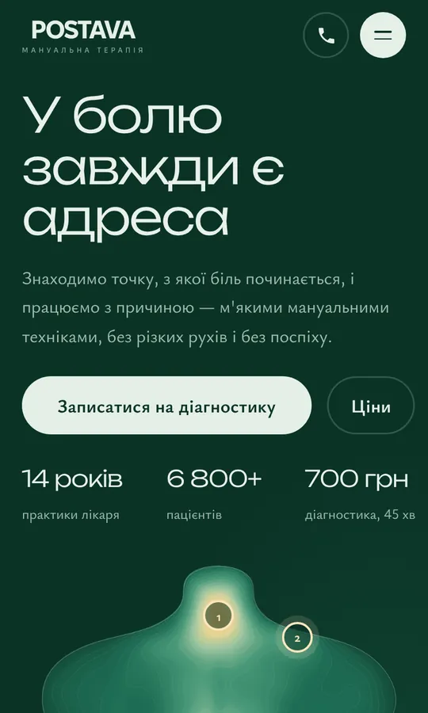
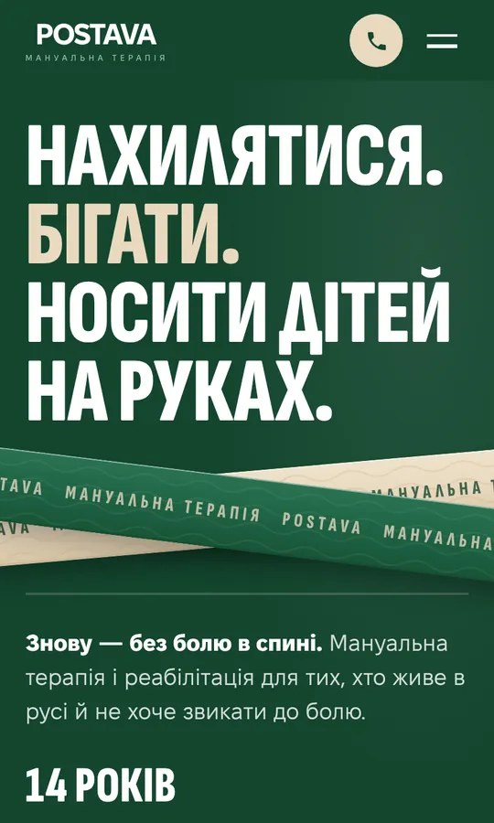
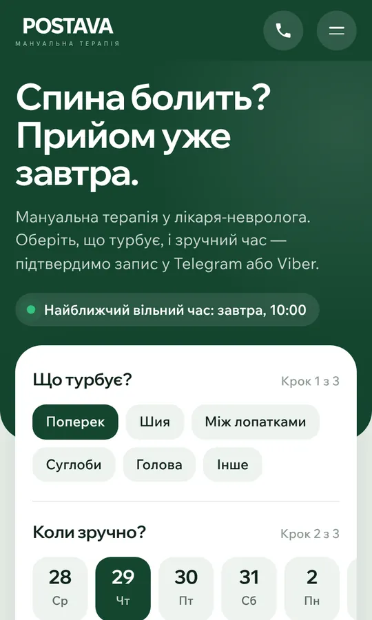

Відкрийте будь-який варіант. Усі зроблені насамперед під телефон.

Латунна табличка на темно-зеленій стіні, класичний преміум.
Відкрити варіант
Інтерактивний хребет: торкаєшся відділу — бачиш, що з ним лікують.
Відкрити варіант
Тепловізійна мапа спини з гарячими точками болю.
Відкрити варіант
Спортивний стиль: великі заголовки й кінезіотейпи.
Відкрити варіант
Як застосунок: проблема, день і час — прямо на першому екрані.
Відкрити варіантДемонстраційний концепт. Ім'я лікаря, ціни й контакти умовні. Розробка — WEBWORK, 2026.